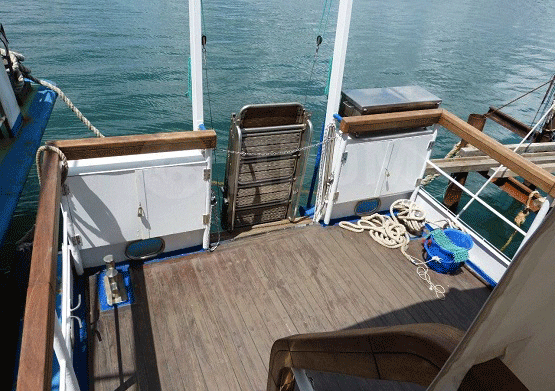
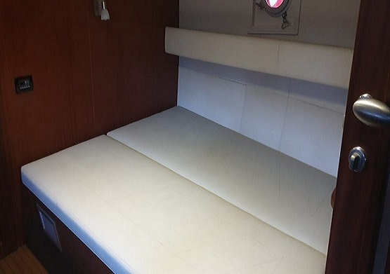
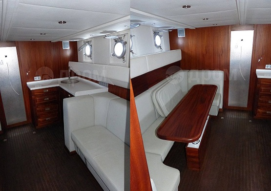

Каури-Керчь
О нас
Основная деятельность
Наша компания, ООО «Каури-Керчь», является прямым судовладельцем технологического, пассажирского флота и осуществляет деятельность в сфере морского транспорта с 2010 года: «Стоянка судов», «Аренда, фрахт судов», «Морские прогулки». Имеет огромный опыт работы по организации и предоставлению услуг морским транспортом, в различных отраслях начиная с пассажирских перевозок, связанных с туристическим направлением и заканчивая обеспечением и сопровождением всевозможных работ на морских и речных объектах, путем предоставления в аренду (фрахт) собственных судов. В ходе сопровождения работ мы оказываем консультационно-информационную помощь в целях наиболее эффективного и грамотного использования арендуемого судна в соответствии с требованиями Заказчика.
Мы имеем опыт работы с заказчиками на объектах строительства Крымского моста в Керченском проливе, Багаевского гидроузла на р. Дон, причального комплекса в порту Тамань, дноуглубления причала в порту Новороссийск, глубоководного выпуска КОС на Южном побережье Крыма и других объектов.
Вместе с тем наша компания является владельцем стоянки судов и предоставляет места для безопасной стоянки судов у причалов в нашей акватории в соответствии с правилами Минтранса.
Безопасность
Наш морской транспорт находится в мореходном состоянии и приведён в годность в соответствии с требованиями безопасности мореплавания. Все суда имеют соответствующие судовые документы, требуемые для безопасной эксплуатации и дающие право на плавание в районе оказания услуг (производства работ); укомплектованы аварийно-спасательные средствами, проверенными и прошедшими испытания, а также соответствующим навигационным оборудованием. Имеют лицензию на пассажирские перевозки и застрахованы в соответствии с действующим Российским законодательством.
Специалисты
Все суда укомплектованы квалифицированным экипажем – состоящим из капитана, командного состава– достаточным для соответствующего Судна, который обучен работе на Судне и его механизмах компетентно и с соблюдением техники безопасности. Все члены экипажа имеют действительные свидетельства о квалификации в соответствии с законодательством российской Федерации. Предоставляемые услуги по управлению и технической эксплуатацией судна обеспечивают его нормальную и безопасную эксплуатацию в соответствии с целями аренды (фрахта).
Услуги
Обеспечение работ
на морских и речных оъектах
- Сопровождение водолазных работ по обследованию дна на различных водных объектах и в районах гидротехнических сооружений
- Сопровождение работ, связанных с дноуглублением, обслу живание земснарядов, в том числе работы с плавучим грун топроводом, а также вспомогательные работы, связанные с перестановками земснаряда на объекте работ
- Доставка с берега в район работ, снабжения, продуктов пи тания, питьевой воды, запчастей и прочее. Поднятие разли чных объектов с морского дна
- Обеспечение морских геолого-геофизических работ, обеспе чение технологических условий для размещения оборудова ния (экспедиции) на судне, участие во вспомогательных работах экспедиции
- Обеспечение радиосвязью
- Другие услуги и работы в море по требованию заказчика, путём предоставления в аренду (фрахт) собственных судов
Предоставление мест
для стоянки судов
Комплекс услуг, связанных с предоставлением места для стоянки судна/судов на территории ООО «Каури-Керчь» в акватории у безопасного причала № 233А по адресу: Республика Крым, г. Керчь, ул. Аршинцевская коса включает в себя:
- Обеспечение постановки и охраняемой стоянки судна/судов, включая вывоз бытового мусора со стандартных мест складирования
- Подключение к береговому электропитанию судна/судов
- Въезд и стоянка легкового транспорта для нужд флота
- Въезд и стоянка грузового транспорта для нужд флота
- Доставка пресной воды (пополнение запасов пресной питьевой воды судна/судов)
- Подход и стоянка иных судов для обслуживания флота Судовладельца (снятие судовых отходов и прочее)
Пассажирские перевозки
морским транспортом
Пассажирские перевозки морским транспортом осуществляются в районах плавания Азовского и Черного морей и включают в себя:
- доставка членов экипажа на судно и обратно к месту отдыха экипажа при смене вахты на судах
- доставка представителей регистровой комиссии и других специалистов на Ваше судно
- перевозка пассажиров в туристических целях (осуще- ствляется по сезону)
- доставка рабочих и оборудования на различные морские объекты
Организация морских
прогулок и рыбалки
Мы готовы организовать для Вас незабываемый отдых в Керчи. Морские путешествия по Керченскому полуострову – отличный вариант интересно и необычно провести время. Рыбалка или романтическая прогулка, дайвинг или обзор прибрежных достопримечательностей, (в том числе Крымский мост), корпоративы или дни рождения в дружной компании – все маршруты по индивидуальному заказу для Вас обеспечат суда «Сагмира» и «Пеликан» укомплектованное всем необходимым для незабываемого отдыха.
Аренда маломерного
флота с экипажем
В собственности компании имеются четыре разъездных судна. Предоставление в аренду (фрахт) судна осуществляется посуточно или почасово, в зависимости от периода, срока, а также целей фрахтования судна по согласованию с заказчиком
Суда
Разъездное трехпалубное судно
Пеликан
- Тип и назначение судна: маломерное-разъездное
- Класс судна: М-СП мс 3,5 28/22
- Год постройки: 1978г.
- Проект № 1411
- Длина: 18,31 м
- Ширина: 5,10 м
- Осадка: 1,30 м
- Высота борта: 2,02 м
- Грузоподъемность: 3,6 т
- Пассажировместимость: 12 чел.




Разъездное судно
Сагмира
- Тип и назначение судна: Разъездное судно.
- Класс судна: М-ПР2,5
- Год постройки: 1989.
- Проект № Р376У
- Длина: 21,5 м
- Ширина: 3,8 м
- Осадка: 1,33 м
- Высота борта: 2,1 м
- Пассажировместимость: 14 чел.
Самоходное разъездное
Оберон
В составе технологического флота имеется разъездное двухпалубное судно «ОБЕРОН». Использование: круглогодичное, в ночное и дневное время суток. Судно зарегистрировано в Государственном судовом реестре - коммерческое использование. Оснащено порталом и двумя лебёдками на корме, грузоподъемностью – 3,5т.
- Класс судна: М-СП мс 1,25 35/11
- Год постройки: 1983г.
- Проект № 1606
- Длина: 17,3 м
- Ширина: 3,7 м
- Осадка: 0,87 м
- Высота борта: 1,6 м
- Грузоподъемность: 15 т
- Пассажировместимость: 12 чел.
Разъездное судно
Квантум
- Тип и назначение судна: одновинтовой теплоход, с седловатой палубой, с рулевой рубкой на верхней палубе, самоходное разъездное
- Класс судна: «Категория 1» РРР
- Год постройки: 1990г.
- Проект № Р376У
- Длина: 19,75 м
- Ширина: 3,98 м
- Осадка: 1,16 м
- Высота борта: 2,10м
- Грузоподъемность: 15 т
- Пассажировместимость: 12 чел.
Суда
Разъездное трехпалубное судно
Пеликан
- Тип и назначение судна: маломерное-разъездное
- Класс судна: М-СП мс 3,5 28/22
- Год постройки: 1978г.
- Проект № 1411
- Длина: 18,31 м
- Ширина: 5,10 м
- Осадка: 1,30 м
- Высота борта: 2,02 м
- Грузоподъемность: 3,6 т
- Пассажировместимость: 12 чел.
Разъездное судно
Сагмира
- Тип и назначение судна: Разъездное судно.
- Класс судна: М-ПР2,5
- Год постройки: 1989.
- Проект № Р376У
- Длина: 21,5 м
- Ширина: 3,8 м
- Осадка: 1,33 м
- Высота борта: 2,1 м
- Пассажировместимость: 14 чел.
Самоходное разъездное
Оберон
В составе технологического флота имеется разъездное двухпалубное судно «ОБЕРОН». Использование: круглогодичное, в ночное и дневное время суток. Судно зарегистрировано в Государственном судовом реестре - коммерческое использование. Оснащено порталом и двумя лебёдками на корме, грузоподъемностью – 3,5т.
- Класс судна: М-СП мс 1,25 35/11
- Год постройки: 1983г.
- Проект № 1606
- Длина: 17,3 м
- Ширина: 3,7 м
- Осадка: 0,87 м
- Высота борта: 1,6 м
- Грузоподъемность: 15 т
- Пассажировместимость: 12 чел.
Разъездное судно
Квантум
- Тип и назначение судна: одновинтовой теплоход, с седловатой палубой, с рулевой рубкой на верхней палубе, самоходное разъездное
- Класс судна: «Категория 1» РРР
- Год постройки: 1990г.
- Проект № Р376У
- Длина: 19,75 м
- Ширина: 3,98 м
- Осадка: 1,16 м
- Высота борта: 2,10м
- Грузоподъемность: 15 т
- Пассажировместимость: 12 чел.